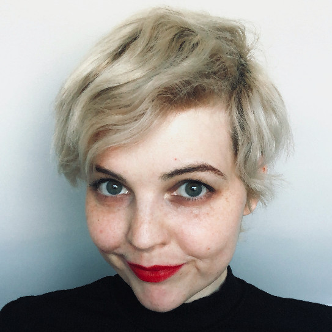

Hi!
I am Aleksandra Samonek – Ola for short – a lawyer with over 17 years of experience in technology, data, and human rights. I have worked for the UN Refugee Agency (UNHCR) and the UN Children’s Fund (UNICEF) on projects concerning the protection of refugees and migrants, refugee-led innovations, and humanitarian operations.
I hold an MA in Law from Jagiellonian University, where I studied the use of adaptive logics to represent courtroom processes, and a PhD in Political Science, which focused on human rights, with particular attention to the right to privacy in the context of surveillance and state security. I have served as an Assistant Professor at Adam Mickiewicz University in Poznań and as a researcher at Université catholique de Louvain (UCLouvain) and Jagiellonian University in Kraków. My current research focuses on externalization, asylum, and mixed migration movements.
You can explore my research publications and projects on their dedicated pages, and follow my blog, Borderlines, for updates and insights.
For refugee-led and community-based organizations seeking support in designing, planning, or implementing innovations, I offer free mentoring sessions. Please contact me to inquire about available dates and times.